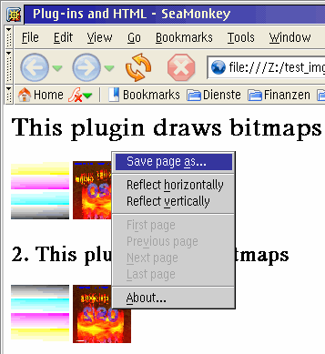
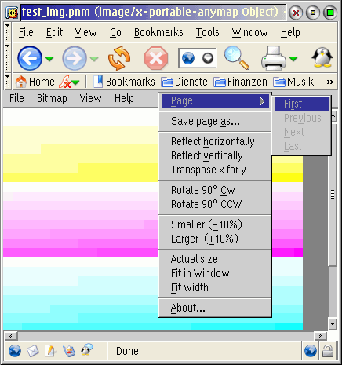

This is a plugin for the Webbrowsers Netscape, Mozilla, Firefox and SeaMonkey available for OS/2 and eComStation that extends them with the support of reading all bitmap formats supported by GBM.DLL.
For being able to use it, the following additional files are required:
Note:
GBM.DLL version 1.41 must not be used as it contains a compiler
optimization issue that reduces stability. When used together
with the GBM plugin, the browser might crash when opening bitmaps.
Please upgrade to GBM.DLL version 1.42 or higher.
Note:
This plugin requires so far that the browser cache is enabled.
Further version might be able to directly stream the images into
the system memory.
There is the embedded mode with reduced functionality and the fullscreen mode with full functionality.
Fullscreen mode viewer with a load of features:Simply copy npgbm.dll into the plugin directory of your browser.
Please check the requirements listed for gbm.dll above.
Copy gbm.dll to a directory somewhere in your LIBPATH (defined in CONFIG.SYS).
The plugin will try to use the GBM File Dialog if it is found somewhere in the LIBPATH. If it is not found, the standard OS/2 file dialog will be used. Save options for bitmap export cannot be specified in the OS/2 file dialog and thus the plugin will use the default export options of each bitmap format.
Testing the plugin:
You can test the correct installation of the GBM plugin with the links
provided below. You need at least GBM.DLL version 1.42. Only then the PNM
images will be shown.
Copyright (C) 2006 Heiko Nitzsche
This software is provided 'as-is', without any express or implied warranty. In no event will the author be held liable for any damages arising from the use of this software.
Permission is granted to anyone to use this software for any purpose, including commercial applications, and to alter it and redistribute it freely, subject to the following restrictions:
SeaMonkey showing embedded PNM and TIF images by using the GBM plugin:
SeaMonkey showing a PNM image fullscreen by using the GBM plugin:
